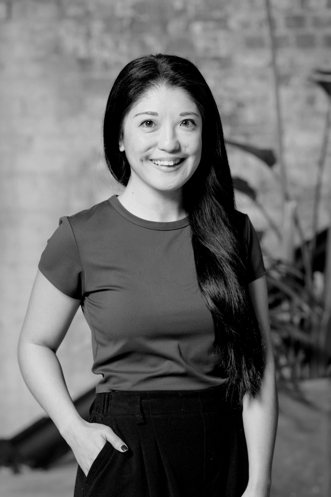

8+ years leading end-to-end UX research across complex, global products. I help teams understand their users deeply, so decisions are grounded in evidence, not assumption.

I'm Zerah, a Senior UX Researcher with 8+ years' experience helping teams build with users' needs at the forefront. I've led research across global markets at Block (Afterpay and Cash App), Mastercard, and Tabcorp, working closely with Product and Design to translate complex human behaviour into clear product direction.
I bring a rigorous yet efficient approach to research, moving quickly without cutting corners and delivering insights that are ready to act on. I'm also deeply curious about where AI is best placed to sharpen and extend my craft.
Due to confidentiality, I keep project details private, but I'm always happy to talk through my experience in conversation. Below is a snapshot of the types of research I've led across global teams. Ask me about any of these.
Open to Senior UX Researcher roles and research consulting opportunities. Based in Sydney, open to hybrid and remote.